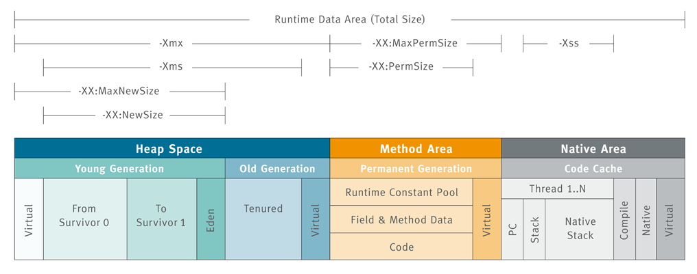
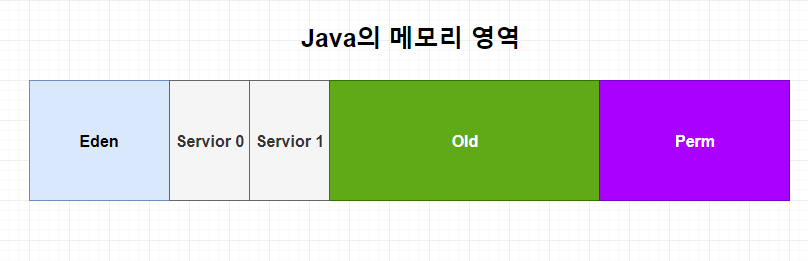
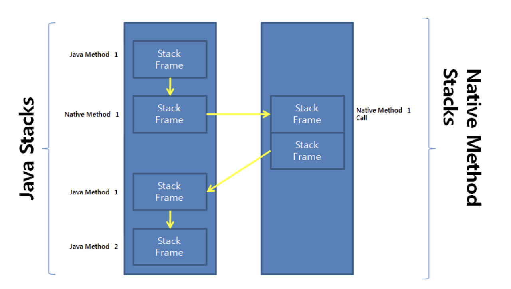

[JVM] JVM 총정리 - 런타임 영역(2)
런타임 영역 은 JVM 이 런타임 환경에서 자바 프로그램을 수행할 때 OS 로부터 할당받는 메모리 영역이다. 이 메모리 영역은 논리적으로 다음과 같이 5가지 영역으로 구분한다.
- Method Area
- Heap Area
- PC Register
- Native Method Stack
- JVM Stack
Method Area
Method Area 는 JVM 벤더마다 다르게 구현되어 있다. 그러나 거의 모든 운영체제에서는 Hotspot 이라는 벤더를 사용하므로 이것을 기준으로 설명할 것이다.
Hotspot JVM 벤더는 JDK 8 버전 기준으로 메모리 영역에 변화가 생겼다. 크게는 기존 Perm 영역(Perm Generation) 이 사라지고 Metaspace 영역이 등장하게 된 것인데, Method Area 가 JVM 에서 어떤 역할을 하는지, JDK 8 버전이 되며 어떤 변화가 생겼는지 알아보자.
Perm 영역의 역할

Perm 영역 은 런타임 환경에서 클래스 로더를 통해 로드된 클래스와 메서드의 메타 데이터가 저정되는 영역이다. 전역 변수나 static 변수 또한 이 영역에 저장되고 프로그램이 종료될 때까지 남아있게 된다. 또한 해당 정보에 대한 요청이 오면 실제
물리 메모리 주소로 변환할 수 있게 하는 영역이다.
이 영역에 저장되는 데이터르 좀 더 세부화하자면 다음과 같다.
1. Type Information
- 클래스와 인터페이스 정보를 뜻한다. 다음과 같은 분류에 따라 정보를 저장한다.
- Type 명: Package name + Class name 형식
- Type 종류: Type 이 Class 인지 Interface 인지에 대한 정보
- Type 의 제어자: 접근 제어자, 제어자 에 대한 정보
- 연관된 Interface 정보: 사용된 Interface 의 정보
2. Runtime Constant Pool
- Type 의 상수 정보를 저장하는 영역이다. 각 상수는 인덱스를 통해 접근이 가능하다. 또한 method, field, type 으로 접근하기 위한 reference 정보가 저장되기 때문에 독자적인 중요성이 있다.
3. Field Information
- 인스턴스 변수의 정보를 저장한다.
4. Method Information
- 메서드의 모든 정보를 저장한다.
5. Class Variable
- static 키워드로 선언된 변수가 저장된다.
Perm 영역의 한계
Perm 영역 은 논리적으로 Method Area 에 속해있지만, 사실 Perm 영역은 Heap Area 내에서 분리된 특수한 공간에 위치한다. 때문에 처음 JVM 에 의해 메모리가 할당이 될 때 영역의 크기가 제한적으로 할당될 수밖에 없고, 이로 인해 런타임 환경에서
OutOfMemory 에러 유발 문제와 GC 를 수시로 해줘야 하는 메모리 누수가 유발된다. 이러한 문제들로 인해 JDK 버전이 8로 올라감에 따라 Perm 영역이 제거되고 Metasapce 영역이 새롭게 등장하게 된다.
Metaspace 영역의 등장
Perm 영역과 비교해 Metaspace 영역의 가장 중요한 차이점은 ‘메모리 할당을 처리하는 방법‘이 달라졌다는 것이다.
Metaspace 영역 은 Native Memory 영역으로 전환되었다. 또한 OS 에 의해 메모리 할당 공간이 자동으로 조절되게끔 바뀌면서 이론상 아키텍쳐가 지원하는 메모리 크기까지 확장할 수 있게 되었다. 따라서 Perm 영역과 비교해 메모리 공간 확보 기능이 향상되었고
보다 유연하고 안정적인 메모리 사용을 제공할 수 있게 되었다. 또한 Method Area 이면서 애매하게 Heap Area 에 속해있던 과거와 달리 명확하게 Heap Area 영역과 독립된 개념으로 존재할 수 있게 되었다.
다음으로 중요한 변경점은 ‘string 과 static object 의 저장 방법’ 이다.
먼저, string 값 저장 방식의 변경은 다음과 같다.
JDK 8 버전 이하에서 문자열 리터럴 방식을 통해 생성하는 string 값은 Runtime Constant Pool 에 저장되었다. 그러나 JDK 8 버전 이후 Runtime Constant Pool 에서 String Constant Pool 이라는 개념이 별도로 분리되어 Heap Area 에 저장되게 변경되었다.
이로 인해 string 리터럴 값이 GC 의 대상이 될 수 있어 메모리 관리가 좀 더 효율적으로 이루어 질 수 있게 되었다.
static object 도 마찬가지로 비슷하게 변경되었다.
기존 Perm 영역에서는 static object 가 Perm 영역에 저장되어 GC 의 대상이 되지 않았지만, JDK 8 버전 이후 Heap Area 에 저장되도록 변경되었고, reference 값만 Metaspace 에서 관리하게 함으로써 사용되지 않는 static object 는 GC 의 대상이 될 수 있게 되었다.
Heap Area
Heap Area 는 Object 클래스를 상속받는 모든 객체들(클래스 인스턴스)과 해당 인스턴스 변수들을 담는 공간이다. 이곳에서는 실제 데이터를 가진 인스턴스와 배열 뿐만 아니라 문자열에 대한 정보를 가진 String Constant Pool(JDK 8 이후) 등이 저장된다.
이 영역은 JVM 당 하나만 생성이 되며, 해당 영역이 가진 데이터는 모든 JVM Stack 영역에서 참조되어 thread 간 공유되기 때문에 같은 애플리케이션을 사용하는 thread 사이에서 인스턴스를 공유하는 경우 동기화 문제가 수반될 수 있다. 또한 참조되지 않는 인스턴스와 배열에 대한 정보를 얻을 수 있기 때문에 GC 의 주 대상이 되는 영역이다.
Hotspot JVM 의 Heap Area 구조
앞서 설명한 이유와 마찬가지로 Hotspot 모델을 기반으로 한 HEAP Area 영역에 대해 살펴보자. 
Hotspot JVM 은 크게 Yong 영역과 Old 영역으로 나뉘어져 있다.
Yong 영역은 객체가 새로 생성되면 할당되는 영역으로, 상태에 따라 Eden, Servior0, Servior1 영역으로 구분되어 저장된다.
대부분의 객체가 금방 Unreachable 상태가 되기 때문에 (어떠한 경우에도 절대 실행되지 않는 상태), 많은 객체가 이 영역에서 생성되었다가 사라진다. 이 영역에서 발생하는 GC 를 Minor GC 라고 부른다.
Old 영역은 Yong 영역에서 Reachable 상태를 유지하며 살아남은 객체가 복사되는 영역이다. 계속해서 사용되는 객체들이 저장되는 공간이기 때문에 Yong 영역보다 크게 할당되며 GC 작업 시간이 Minor GC 보다 훨씬 오래 걸린다.
이 영역에서 일어나는 GC를 Major GC 라 부른다.
PC Register
PC Register 는 쓰레드가 현재 실행중인 메서드의 명령을 담고 있는 JVM 명령어 주소를 저장한다.
명령어가 자바 메서드를 수행하고 있다면 JVM 명령어의 주소를 저장하지만, 만약 다른 언어의 메서들를 수행한다면 UNDEFINED 상태가 되고, 다른 언어의 메서드는 뒤에 설명할 Native Method Stack Srea 에서 수행하게 된다.
JVM Stack
JVM Stack 은 메서드를 호출할 때마다 frame 이라는 단위의 정보를 push(추가) 하고 메서드가 종료되면 해당 frame을 pop(제거) 하는 동작을 수행한다. 이런 특징으로 자바에서 변수는 선언된 블록 안에서만 유효하고, 블록을 벗어나면 스택에서 제거되어 알 수 없게 된다.
frame 은 다음 3가지로 구성된다.
- Local Variable: 메서드의 지역 변수들을 갖는다.
- Operand Stack: 메서드 내 계산을 위한 작업 공간이다. 바이트 코드 명령문들이 들어있는 공간이라고 할 수 있다.
- Constant Pool Reference: Constant Pool 참조를 위한 공간이다.
Native Method Stack
프로그램을 실행하다 보면 경우에 따라서는 순수하게 JAVA로 구성된 코드만을 사용할 수 없는 시스템의 자원이나 API가 존재한다. 이러한 다른 프로그래밍 언어로 작성된 메서드들을 native method 라고 하는데, Native Method Stack 은 이런 native method 들을 다루는 영역이다.
기본 동작 과정은 다음과 같다. 
일반적인 메서드가 실행될 때 해당 frame 들이 JVM Stack 에 쌓이며 실행이 되다가 native method 를 만나면 해당 메서드를 Native Method Stack Area 에 쌓고 수행이 끝난 뒤 다시 JVM Stack 으로 돌아오게 된다. 이 때, native method 를 호출한 stack frame 으로 돌아가는 것이 아닌 새로운 stack frame 을 생성하여 다시 작업을 수행하게 된다. 그렇기 때문에 native code 로 되어있는 함수의 호출을 자바 프로그램 내에서 직접 수행할 수 있고, 그 결과를 받아올 수 있는 것이다.
결과적으로 JVM 은 Native Stack Frame 영역을 통해 JNI(Java Native Interface) 방식을 지원한다고 할 수 있겠다.
여기서 JNI(Java Native Interface) 란 다른 언어로 작성된 라이브러리들을 호출하거나 반대로 호출되는 것을 가능하게 하는 프로그래밍 프레임워크를 말한다.